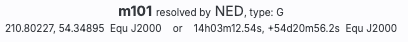
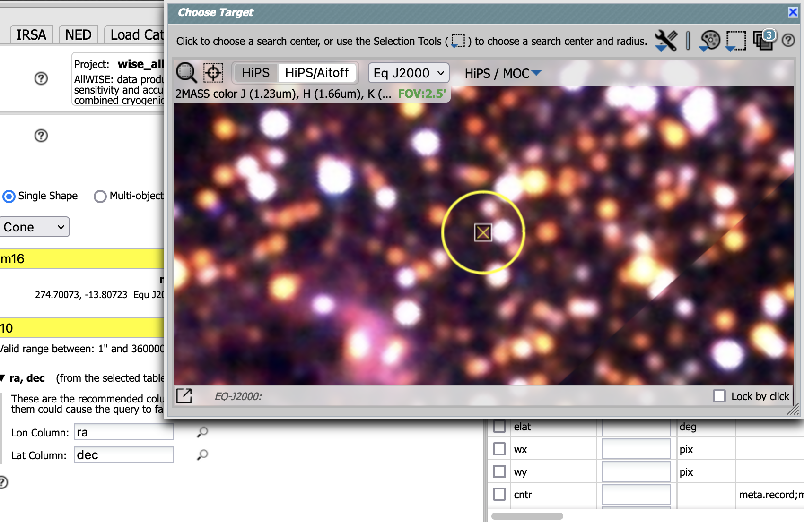
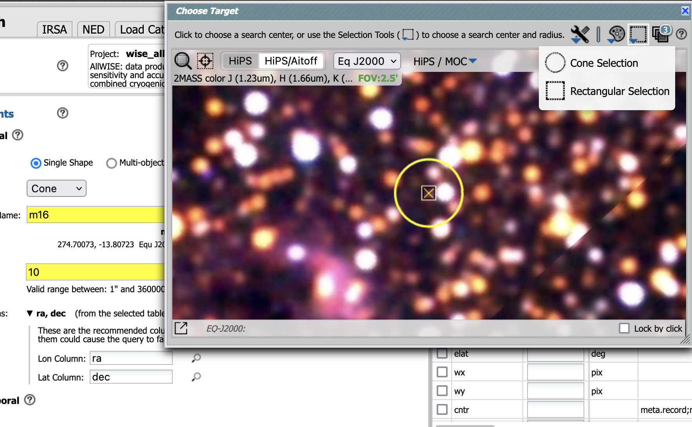
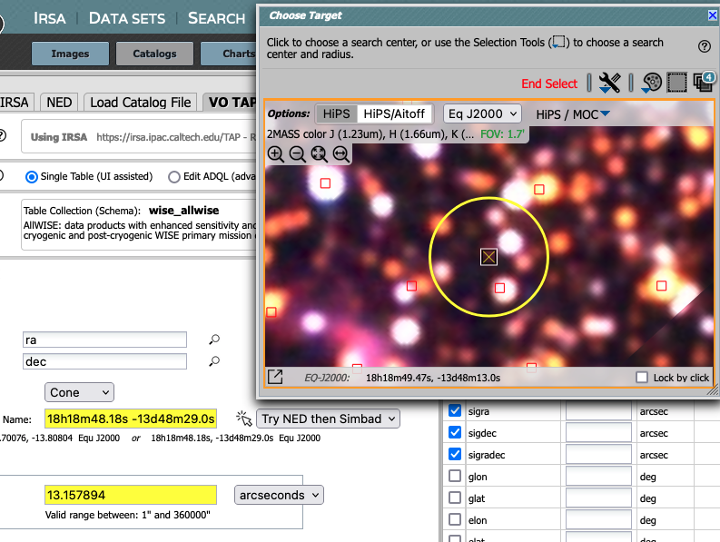
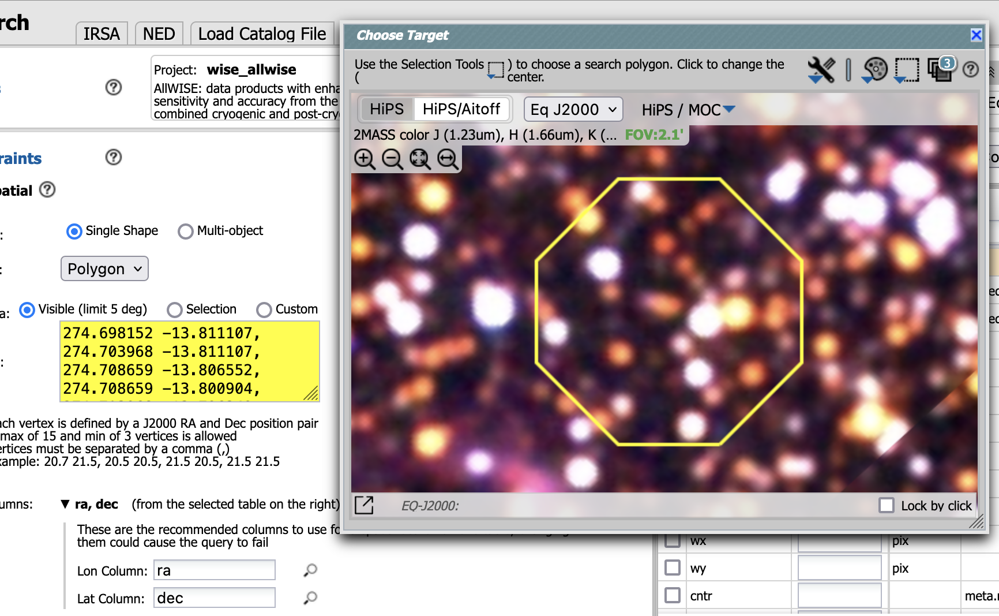

Contents of page/chapter:
+Target Name
+Interactive Target Refinement
+A List of Targets
You may enter a target name, and have either NED-then-Simbad or
Simbad-then-NED resolve the target name into coordinates. After it
resolves the name, it will tell you which resolver service it used,
and also what that service has for the object type:

Alternatively, you may enter coordinates directly. These coordinates can be in decimal degrees or in hh:mm:ss dd:mm:ss format, or Jhhmmss+ddmmss format. By default, it assumes you are working in J2000 coordinates; you can also specify galactic, ecliptic, or B1950 coordinates as follows:
As you are completing a valid coordinate entry, it echoes back to you what it thinks you are entering. Look just below the box in which you are typing the coordinates to see it dynamically change.
⚠ Tips and Troubleshooting
When you click on the icon you bring up a window:
 | If you have entered a target already, the window arrives already centered on the target. If not, it is centered on the galactic center, zoomed out. If you have entered a cone search radius already, then the circle drawn on the image is that cone size. You can manipulate this image with the same basic tools as in the visualization tools. |
 |
To change the search region interactively, choose the selection
tools and draw a shape on the image. Note that if you have selected a cone search on the left, no matter what you select on the right, it will give you a cone search. If you change the cone position or radius in the yellow boxes after you change the selection, it will update the region in the image. |
 | If you want to quit out of the selection without changing, click on "end selection" (the brown text near the top of the image). |
 | If you select polygon on the left, and you use the selection tool for "cone selection" on the right, you will get a spherical polygon (a polygon where the line segments are on a sphere). |
When you are done with this pop-up window, click on the 'x' in the upper right of the window. Then you can continue with whatever you were doing before you started to refine your target parameters.